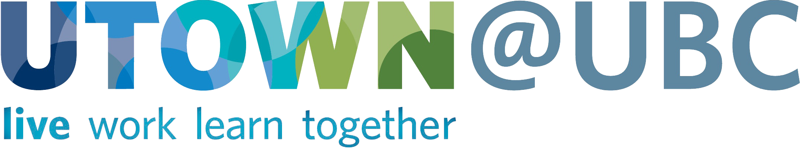
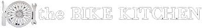
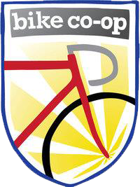
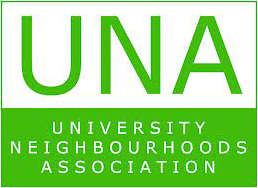

The first event of its kind at UBC! Designed as a celebration of the huge on-campus cycling culture, the UBC BikeRave will be a night full of lights, bikes, music, and more!
Come out to the Koerner Library Plaza at UBC on your two-wheeled transportation device decked out in glowsticks, lights, and crazy costumes, and join us as we cycle around our beautiful campus in the twilight, stopping along the route for impromptu dance parties!
DJ MorTonE will be performing live over CiTR, so hook your bike up with speakers and >>stream CiTR<< over your phones to help us amplify the soundtrack for the evening.
Following the event, join us at the Pit Pub for the BikeRave after party, where awesome prizes will be given out for the best costumes, brightest decorations, and most musical bikes.
7:30 PM
Location 1: Koerner Library Plaza
Event: registration + decoration + tune into the CiTR stream on your phones >>here<<
8 PM - 9:30 PM
Location 2: clockwise route
Event: let's ride!
10 PM
Location 4: Pit Pub
Event: BikeRave after party!
For information about traffic control and closures, please click here.
Please RSVP for this event here.
We also require a waiver to be signed and brought to check-in at the event prior to your participation.
Download the waiver here.
Other essentials to bring along...
Your bicycle, a helmet, a good lock, water, a crazy costume, flashing lights, anything neon, phone & speakers, friends, and a good attitude. Learn how to keep your bike safe here.
If you have questions or comments, please contact the Facebook event hosts here.
The UBC BikeRave would not have been possible without the support of our sponsors.
We would like to say: thank you.
     